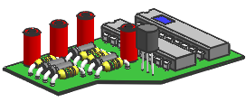

隐藏和显示一个子装配节点
-
取消选中子装配 des03_laser_ic_board_13的复选框。
整个子装配在图形窗口中都不再可见，每个组件节点都有一个灰色复选框标记 。
des03_laser_test_assm_1
des03_laser_ic_board_13
 des03_laser_c1_13
des03_laser_c1_13
-
将您的光标往下移动到子装配树来显示各个组件的范围框。
-
选中 des03_laser_ic_board_13复选框 。
子装配再次可见。
